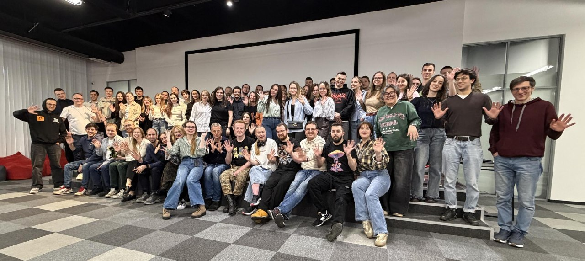
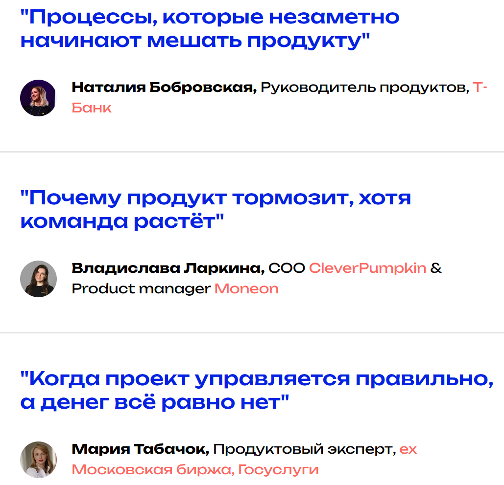
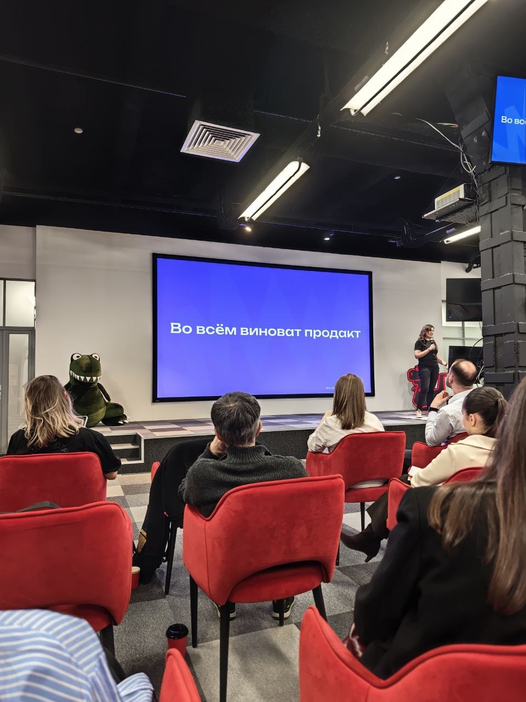
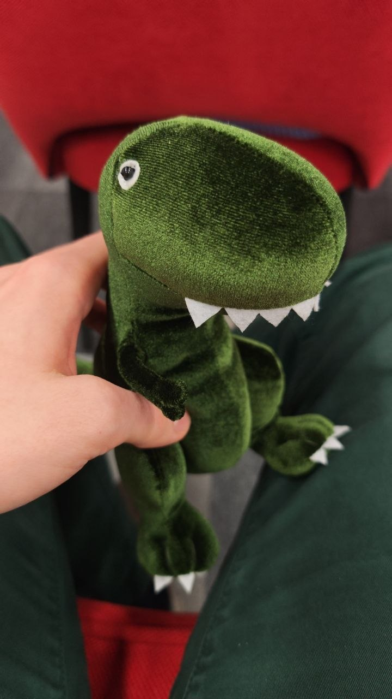

Нетворкаем!

Сходил на митап «Почему хорошие команды делают плохие продукты». Программа была достаточно занятная:

Моя подруга Наташа выступала с классным докладом «Процессы, которые незаметно начинают мешать продукту».
Что вынес для себя:
- у любого процесса, встречи и т.д. должен быть полезный выхлоп. Если его нет или вложенные ресурсы не оправдываются, нужно избавляться от коста: учимся расставлять приоритеты;
- введение очередного процесса или регламента не всегда хорошо, нужно оставлять зрелым командам свободу принятия решений;
- мискоммуникации даже в Agile-командах болезненны: начинаем с аккуратного общения в чатах, прописываем DoD'ы и DoR'ы и стремимся к Spec Driven Development.
Следующий доклад «Почему продукт тормозит, хотя команда растёт» суммаризировал идеи, которые декларировались в названии. Не обошлось без мемов:

В качестве решения затронутых в этих докладах проблем вижу переход к tiny teams или, в идеале, к product-инженерам. На митапе мало кто был в курсе этого термина. Шок!
Мария Табачок выступала с докладом «Когда проект управляется правильно, а денег всё равно нет». Тут прочувствовал (опять) всю боль продуктовой разработки. Роскошный доклад!
Затем по традиции отведали вкусной пиццы и пообщались с другими продактами и лидами. А после с организаторами и спикерами не упустили возможность продолжить общение в ближайшем баре.
P.S. За лучший вопрос в ожесточенной борьбе забрал плюшевого Тирекса 🦖!

← Назад к списку статей